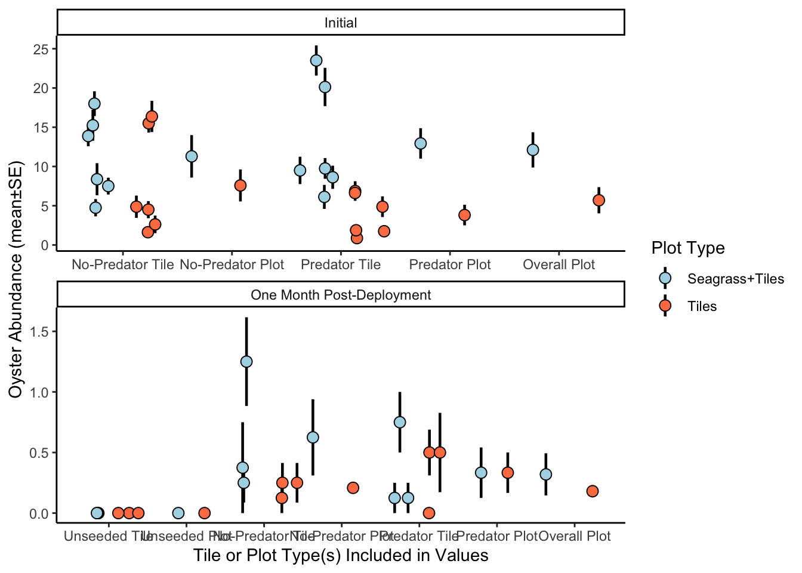

[1] "Extra" "Seagrass+Tiles" "Tiles" [1] "Extra" "ST1" "ST2" "ST3" "T1" "T2" "T3" Data were downloaded as .csv files from Google Drive.
Oyster data link for accessing data on Google Drive.
Seagrass data link for accessing data on Google Drive.
Decisions made about the data: - For oyster data, the data recorded for the “extra” GROW tile is removed and not included in further analyses. - For seagrass percent cover values that were recorded as ranges on the datasheets (e.g., 0-1 or 0-5), the values are being overwritten with the lower end of the range given so as to provide a conservative estimate of seagrass cover. So for a range of ‘0-5’, the actual data value will be changed to ‘0’.
[1] "Extra" "Seagrass+Tiles" "Tiles" [1] "Extra" "ST1" "ST2" "ST3" "T1" "T2" "T3" `summarise()` has grouped output by 'Date', 'Plot_Label'. You can override
using the `.groups` argument.
`summarise()` has grouped output by 'Date'. You can override using the
`.groups` argument.`summarise()` has grouped output by 'Date', 'Plot_Label', 'Plot_Type',
'Tile_Type'. You can override using the `.groups` argument.
`summarise()` has grouped output by 'Date', 'Plot_Label', 'Plot_Type'. You can
override using the `.groups` argument.
`summarise()` has grouped output by 'Date', 'Plot_Type'. You can override using
the `.groups` argument.
`summarise()` has grouped output by 'Date', 'Plot_Label'. You can override
using the `.groups` argument.
`summarise()` has grouped output by 'Date'. You can override using the
`.groups` argument.`summarise()` has grouped output by 'Date', 'Plot_Label', 'Plot_Type',
'Tile_Type'. You can override using the `.groups` argument.
`summarise()` has grouped output by 'Date', 'Plot_Label', 'Plot_Type'. You can
override using the `.groups` argument.
`summarise()` has grouped output by 'Date', 'Plot_Type'. You can override using
the `.groups` argument.
`summarise()` has grouped output by 'Date', 'Plot_Label'. You can override
using the `.groups` argument.
`summarise()` has grouped output by 'Date'. You can override using the
`.groups` argument.[1] "Individual Plots" "Plot Type" Fig_1_Seagrass_Percent_Cover <- seagrass_custom_ggplot(sg_summary_fig, "Percent_Cover", y_axis_label = "Seagrass Percent Cover", y_axis_min = 0, y_axis_max = 100)
Fig_2_Seagrass_Canopy_Height <- seagrass_custom_ggplot(sg_summary_fig, "Canopy_Height_cm", y_axis_label = "Seagrass Canopy Height (cm)", y_axis_min = 0, y_axis_max = 22)
Fig_1_Seagrass_Percent_Cover
Fig_2_Seagrass_Canopy_HeightWarning: Removed 8 rows containing missing values (`geom_segment()`).Warning: Removed 8 rows containing missing values (`geom_point()`).
#syntax for rename is NEW name first and then old/existing column name
# for oyst_abundance_summary_tile summary table
oyst_abundance_summary_tile <- oyst_abundance_summary_tile %>%
select(-Plot_Label, -Tile_Tag) %>%
mutate(data_type = ifelse(Tile_Type == "Control", "Unseeded Tile",
ifelse(Tile_Type == "No-predator", "No-Predator Tile",
ifelse(Tile_Type == "Predator", "Predator Tile", "ERROR"))))
# for oyst_abundance_summary_plot summary table
oyst_abundance_summary_plot <- oyst_abundance_summary_plot %>%
rename(Oyster_Abundance_Mean = Oyster_Abundance_Mean_Mean_Mean,
Oyster_Abundance_n = Oyster_Abundance_Mean_Mean_n,
Oyster_Abundance_SD = Oyster_Abundance_Mean_Mean_SD,
Oyster_Abundance_SE = Oyster_Abundance_Mean_Mean_SE)
oyst_abundance_summary_plot <- oyst_abundance_summary_plot %>%
mutate(data_type = ifelse(Tile_Type == "Control", "Unseeded Plot",
ifelse(Tile_Type == "No-predator", "No-Predator Plot",
ifelse(Tile_Type == "Predator", "Predator Plot", "ERROR"))))
# for oyst_abundance_summary_plot_type summary table
oyst_abundance_summary_plot_type <- oyst_abundance_summary_plot_type %>%
rename(Oyster_Abundance_Mean = Oyster_Abundance_Mean_Mean_Mean,
Oyster_Abundance_n = Oyster_Abundance_Mean_Mean_n,
Oyster_Abundance_SD = Oyster_Abundance_Mean_Mean_SD,
Oyster_Abundance_SE = Oyster_Abundance_Mean_Mean_SE) %>%
mutate(data_type = "Overall Plot",
Tile_Type = "All") %>%
relocate(Tile_Type, .after = Plot_Type)
oyst_abundance_summary_fig <- bind_rows(oyst_abundance_summary_tile,
oyst_abundance_summary_plot,
oyst_abundance_summary_plot_type)
#check order of levels for the data_type variable
levels(as.factor(oyst_abundance_summary_fig$data_type))[1] "No-Predator Plot" "No-Predator Tile" "Overall Plot" "Predator Plot"
[5] "Predator Tile" "Unseeded Plot" "Unseeded Tile" #reorder the levels for the data_type variable
levels(oyst_abundance_summary_fig$data_type) <- c("Unseeded Tile","Unseeded Plot", "No-Predator Tile", "No-Predator Plot",
"Predator Tile", "Predator Plot", "Overall Plot")
oyst_abundance_summary_fig$data_type <- factor(oyst_abundance_summary_fig$data_type, levels = c("Unseeded Tile","Unseeded Plot", "No-Predator Tile", "No-Predator Plot", "Predator Tile", "Predator Plot", "Overall Plot"))
#check order of level for the data_type variable
levels(oyst_abundance_summary_fig$data_type)[1] "Unseeded Tile" "Unseeded Plot" "No-Predator Tile" "No-Predator Plot"
[5] "Predator Tile" "Predator Plot" "Overall Plot" # oyster_custom_ggplot <- function(summary1, summary2, summary3, variable_name, y_axis_label, y_axis_min, y_axis_max) {
FIG_oyst_abundance <- ggplot(oyst_abundance_summary_fig, aes(x = data_type, y = Oyster_Abundance_Mean, group = Plot_Type)) +
facet_wrap(~Date, nrow = 2, ncol = 1,
labeller = labeller(Date = c("8/2/23" = "Initial", "9/6/23" = "One Month Post-Deployment")),
scales = "free") +
theme_classic() +
# geom_errorbar(aes(ymin = Oyster_Abundance_Mean - Oyster_Abundance_SE,
# ymax = Oyster_Abundance_Mean + Oyster_Abundance_SE,
# group = Plot_Type,
# shape = Plot_Type, fill = Plot_Type, color = Plot_Type),
# width = 0.1,
# position = position_jitterdodge(jitter.width = 0.3,
# dodge.width = 0.5,
# seed = 123)) +
# # position = position_dodge(width = 0.5)) +
geom_linerange(aes(ymin = Oyster_Abundance_Mean - Oyster_Abundance_SE,
ymax = Oyster_Abundance_Mean + Oyster_Abundance_SE,
group = Plot_Type,
color = Plot_Type),
# width = 0.1,
position = position_jitterdodge(jitter.width = 0.4,
dodge.width = 1,
seed = 155),
linewidth = 0.8) +
geom_point(size = 3,
aes(shape = Plot_Type, fill = Plot_Type, color = Plot_Type),
position = position_jitterdodge(jitter.width = 0.4,
dodge.width = 1,
seed = 155),
# position = position_dodge(width = 0.5),
show.legend = TRUE) +
labs(x = "Tile or Plot Type(s) Included in Values",
y = "Oyster Abundance (mean±SE)") +
# ,
# color = "Plot Type",
# shape = "Plot Type",
# fill = "Plot Type") +
scale_color_manual(values = c("Seagrass+Tiles" = "black", "Tiles" = "black"), name = "Plot Type") +
scale_shape_manual(values = c("Seagrass+Tiles" = 21, "Tiles" = 21), name = "Plot Type") +
scale_fill_manual(values = c("Seagrass+Tiles" = "lightblue", "Tiles" = "coral"), name = "Plot Type") +
# guides(shape = guide_legend(override.aes = list(size = 4)))+
theme(panel.border = element_blank())
FIG_oyst_abundance
## IMPROVEMENTS TO DO
### can I jitter the points for those that are overlapping within groups?
### reorder the factor levels for x-axis categories.
### figure out appropriate size to save this as, including appropriate font size for x-axis labels.
#### Duplicate for oyster size data!